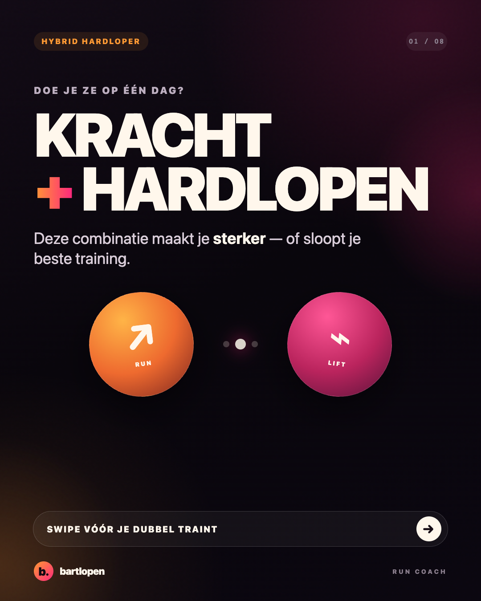
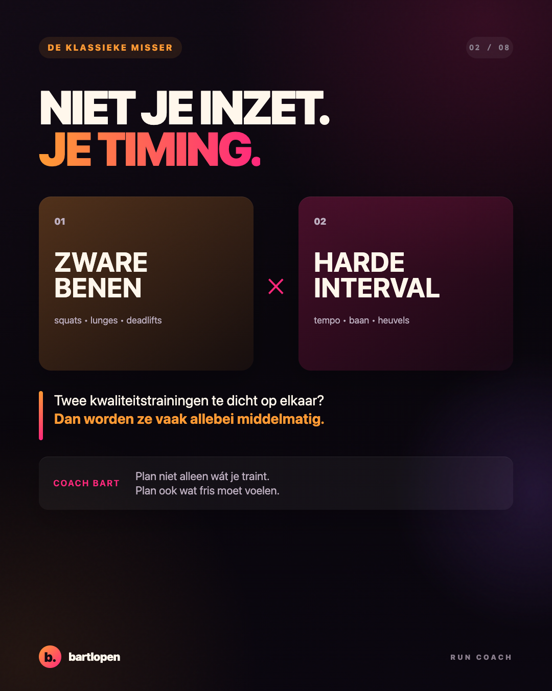
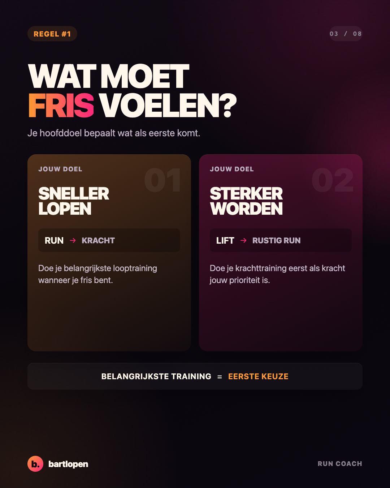
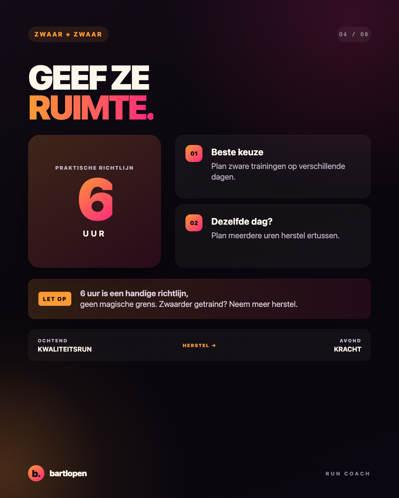
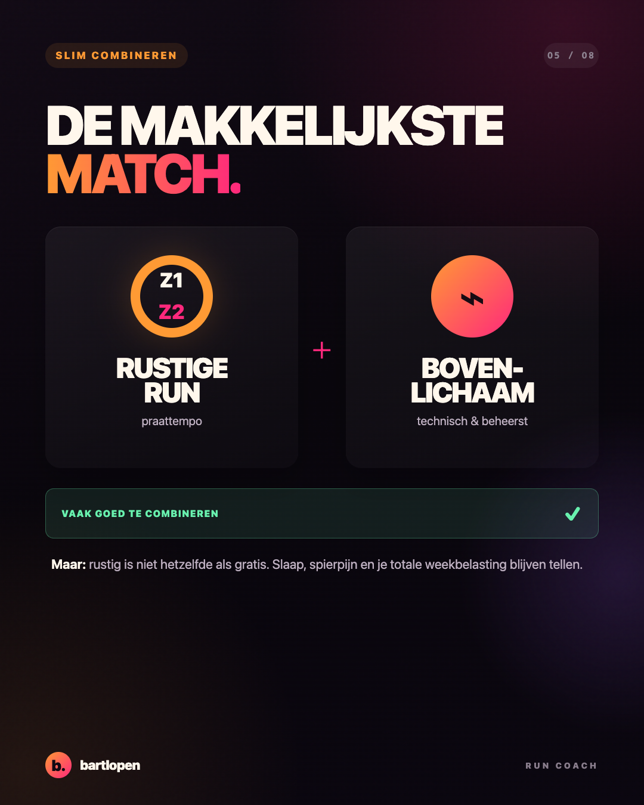
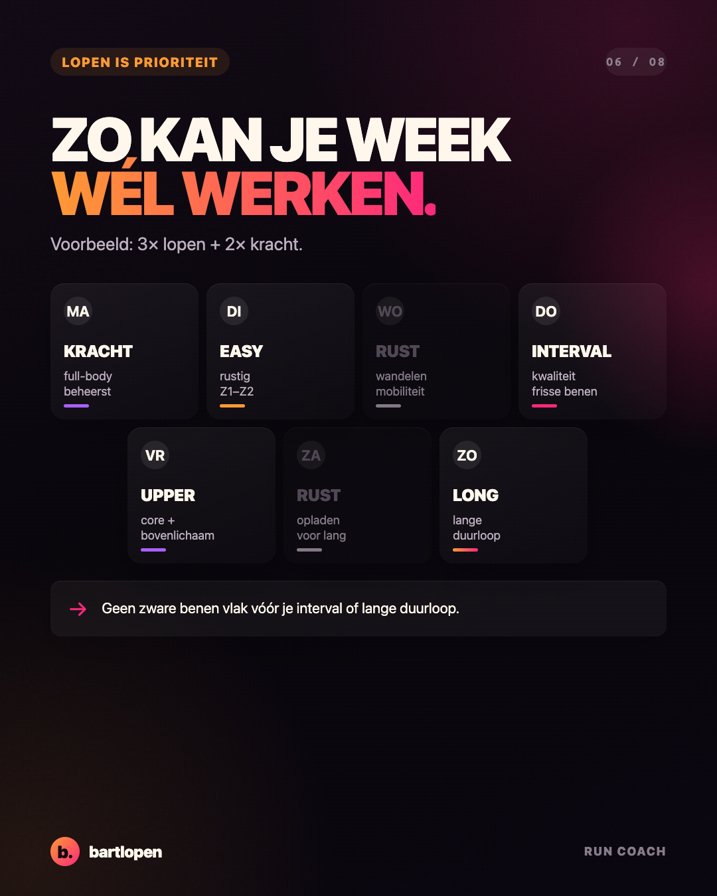
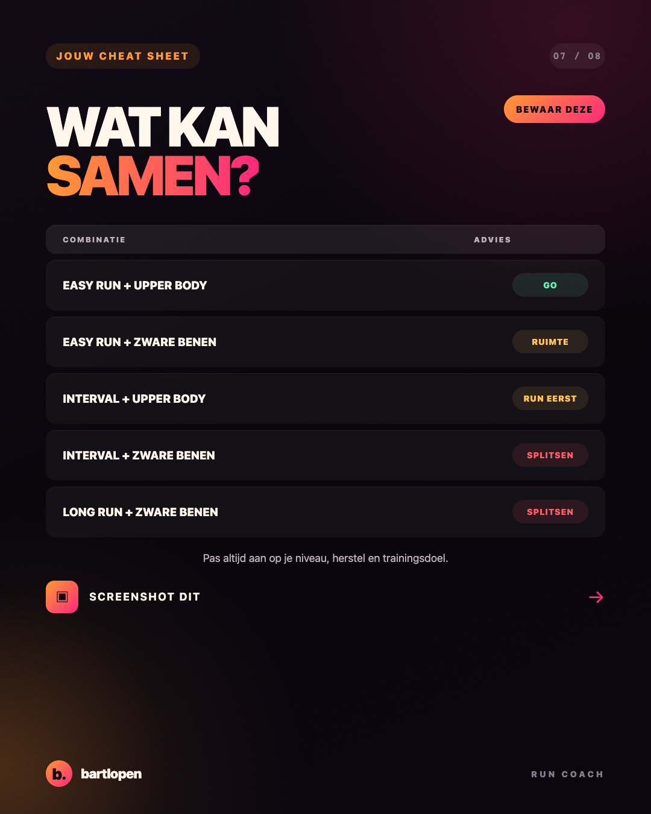
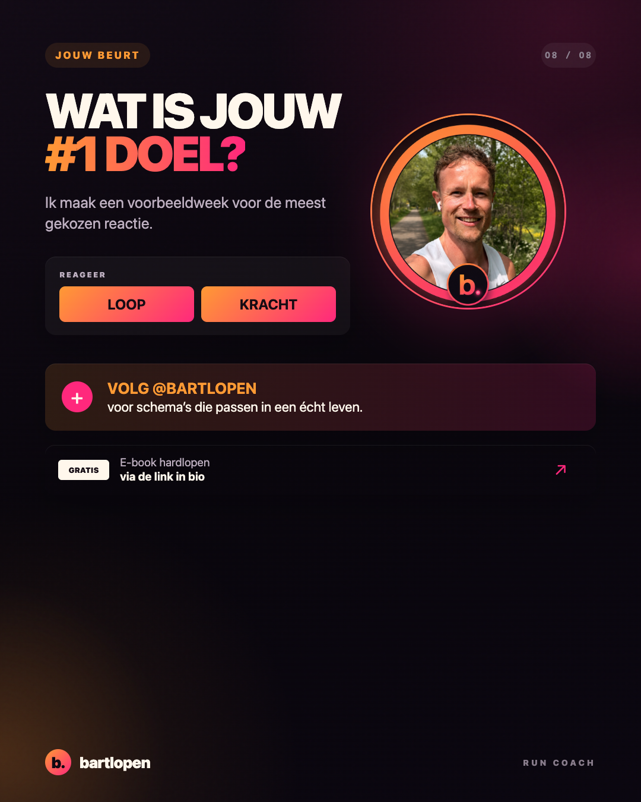

SLIDE 01 ↗NIEUW · Bekijk de Zone 2 PRO-serie →
Hardlopen
× kracht
De verfijnde PRO-editie: acht kaarsrechte, rustige slides in 4:5-formaat voor Instagram en TikTok Photo Mode. Tik op een slide om het originele PNG-bestand te openen en bewaren.

SLIDE 02 ↗
SLIDE 03 ↗
SLIDE 04 ↗
SLIDE 05 ↗
SLIDE 06 ↗
SLIDE 07 ↗
SLIDE 08 ↗Caption
KRACHT + HARDLOPEN OP ÉÉN DAG? 👀 Kan prima — als je het slim plant. Zware benen vlak vóór je interval? Dan voelen beide trainingen minder goed. Onthoud dit: 🔥 je belangrijkste training eerst ⏱️ zwaar + zwaar? Houd ze uit elkaar ✅ easy run + upper body? Vaak een topcombi Swipe, bewaar en plan je week slimmer. Wat is jouw #1 doel: LOOP of KRACHT? 👇 #hardlopen #krachttraining #hybridtraining #hardlooptips #bartlopen